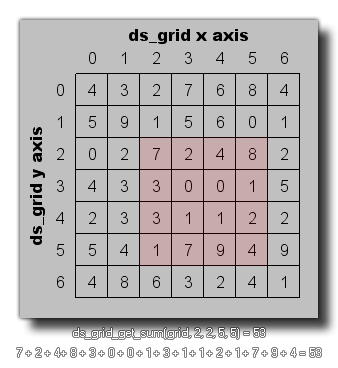

ds_grid_get_sum(index, x1, y1, x2, y2);
| Argument参数 | Description描述 |
|---|---|
| index | The index of the grid.栅格数据的索引。 |
| x1 | The left cell column of the region.区域的左端单元格列。 |
| y1 | The top cell row of the region.区域的顶端单元格行。 |
| x2 | The right cell column of the region.区域的右端单元格列。 |
| y2 | The bottom cell row of the region.区域的底端单元格行。 |
Returns 返回值: Real 实数型
This function can be used to add all the values all the cells
found within the defined region of a grid together, as shown in the
image below:
这个函数可以被用于将一个栅格数据中被定义的区域内所有单元格的值加和，
正如下图所示：
val = ds_grid_get_sum(grid, 0, 0, 5, 5);
The above code will set the variable "val" to the sum of all
values contained within the given region of the ds_grid indexed in
the variable "grid".
上述代码将设定变量"val"为索引为变量"grid"的栅格数据中被给定区域内所包含值的总和。
| Converted from CHM to HTML with chm2web Pro 2.85 (unicode) |